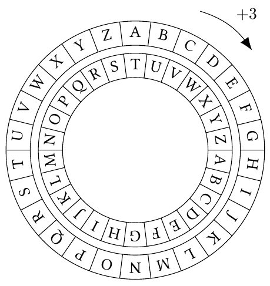

The Caesar Cipher is a simple substitution cipher that shifts each letter in the plaintext by a fixed number of places down or up the alphabet. For example, with a shift of 3, A becomes D, B becomes E, and so on. Decryption involves shifting the letters back by the same number of places.
